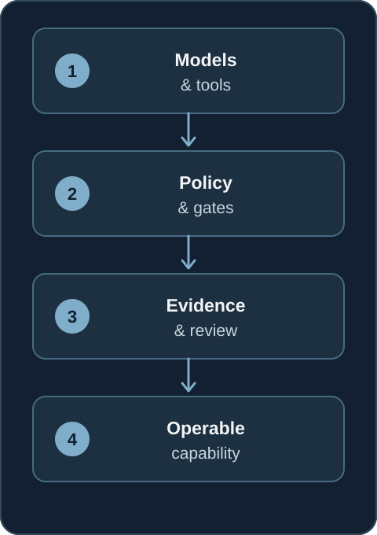
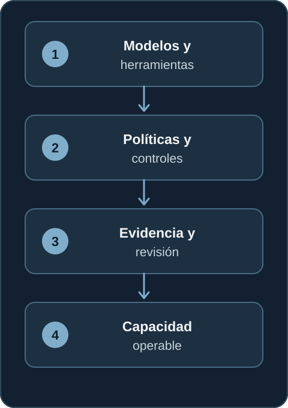

← All writing← Todos los artículos
What does it take to make AI work beyond the demo?¿Qué hace falta para que la IA funcione más allá de una demo?
A platform engineering view of the controls, evidence and ownership needed to operate AI beyond a promising demo.Una perspectiva de ingeniería de plataforma sobre los controles, la evidencia y las responsabilidades necesarios para operar IA más allá de una demo prometedora.
A model can generate a useful answer in a demo. An operating system for AI has to keep producing useful outcomes when inputs are messy, providers fail, costs rise and people need to intervene.
That is the part of AI engineering I focus on. My background in Linux, cloud architecture, SRE and platform engineering has taught me to ask operational questions early: Who owns the decision? What evidence supports it? What happens when a dependency fails? Can we explain what was published, and can we stop or reverse it?

Models are components
Models, agents and tools are parts of a wider system. The system needs boundaries around what a model may decide, what must be checked deterministically and when a person retains final authority.
For example, an agent may draft a plan or classify evidence. Tenant access, budget arithmetic, publication approval and external side effects should be enforced by application logic. A prompt can express intent; a backend gate can enforce it.
Reliability needs evidence
Probabilistic output requires a different quality contract from a conventional API response. A plausible sentence is not proof. In my personal work, I use structured outputs, source provenance, explicit unknown states and review gates to make claims inspectable.
Evaluation also has to cover the complete workflow. Prompt quality matters, but so do retrieval or source quality, handoffs, human review, publication integrity and the behavior of the system after an error. A useful metric is one that helps the team decide what to improve next.
Governance is an operating property
Human-in-the-loop is meaningful only when a human decision changes system state. Approval, rejection and stop conditions need to persist and be enforced where actions happen. Audit trails should make it possible to reconstruct why the system acted.
The same applies to cost. Token use, model choice and estimated spend are operational signals. If a value is unavailable or estimated, the interface should say so instead of suggesting false precision.
One thesis across different domains
My personal projects explore these ideas in different settings. GrowthMesh applies them to multi-tenant marketing workflows. CAUSIO uses evidence and corroboration for market intelligence. Ecos Inmersivos applies quality gates and human editorial control to audio production. AI Conversacional Lab defines an adaptive tutor's behavior and evaluation model; it remains a design and evaluation architecture rather than a claimed production deployment.
These projects are separate from my professional work at Cobee. Together, they are evidence of a recurring engineering question: How do we turn AI capability into something a team can safely operate, evaluate and improve?
For me, that is the bridge from Platform Engineering to AI Platform & Enablement.
Un modelo puede generar una respuesta útil en una demostración. Un sistema de IA operable debe seguir produciendo resultados útiles cuando las entradas son imperfectas, falla un proveedor, aumentan los costes o una persona necesita intervenir.
Esa es la parte de la ingeniería de IA en la que me centro. Mi experiencia en Linux, arquitectura cloud, SRE e ingeniería de plataforma me ha enseñado a plantear pronto las preguntas operativas: ¿quién es responsable de la decisión? ¿Qué evidencia la respalda? ¿Qué ocurre si falla una dependencia? ¿Podemos explicar qué se publicó y detenerlo o revertirlo?

Los modelos son componentes
Los modelos, agentes y herramientas forman parte de un sistema más amplio. Ese sistema necesita límites claros sobre lo que puede decidir el modelo, lo que debe comprobarse de forma determinista y cuándo una persona conserva la autoridad final.
Por ejemplo, un agente puede redactar un plan o clasificar evidencia. El acceso a los datos de cada tenant, el cálculo de presupuestos, la aprobación de una publicación y las acciones con efectos externos deben estar protegidos por la lógica de la aplicación. Un prompt puede expresar una intención; una validación en el backend puede hacerla cumplir.
La fiabilidad necesita evidencia
Una salida probabilística requiere un contrato de calidad distinto al de una respuesta de API convencional. Una frase plausible no es una prueba. En mis proyectos personales utilizo salidas estructuradas, procedencia de las fuentes, estados explícitos de desconocimiento y revisiones para que las afirmaciones puedan examinarse.
La evaluación también debe abarcar el flujo completo. La calidad del prompt importa, pero también la calidad de las fuentes, los traspasos entre componentes, la revisión humana, la integridad de la publicación y el comportamiento del sistema después de un error. Una métrica útil es la que ayuda al equipo a decidir qué mejorar a continuación.
El gobierno es una propiedad operativa
La supervisión humana solo tiene sentido cuando una decisión humana cambia el estado del sistema. Las aprobaciones, rechazos y condiciones de parada deben persistir y aplicarse donde ocurren las acciones. La trazabilidad debe permitir reconstruir por qué actuó el sistema.
Lo mismo ocurre con el coste. El consumo de tokens, el modelo utilizado y el gasto estimado son señales operativas. Si un dato no está disponible o es una estimación, la interfaz debe indicarlo en lugar de sugerir una precisión que no existe.
Una tesis en distintos ámbitos
Mis proyectos personales exploran estas ideas en contextos diferentes. GrowthMesh las aplica a flujos de marketing multi-tenant. CAUSIO utiliza evidencia y corroboración en inteligencia de mercado. Ecos Inmersivos aplica controles de calidad y supervisión editorial humana a la producción de audio. AI Conversacional Lab define el comportamiento y el modelo de evaluación de un tutor adaptativo; es una arquitectura de diseño y evaluación, sin afirmar un despliegue en producción.
Estos proyectos son independientes de mi trabajo profesional en Cobee. Juntos muestran una pregunta recurrente de ingeniería: ¿cómo convertir una capacidad de IA en algo que un equipo pueda operar, evaluar y mejorar con seguridad?
Para mí, ese es el puente entre Platform Engineering y AI Platform & Enablement.